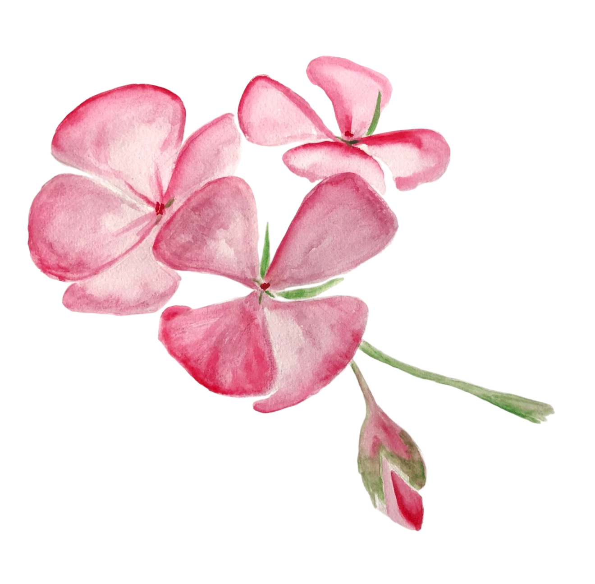

{{ p.year }}
{{ p.tag }}
{{ p.title }}
{{ p.summary }}
{{ t.viewCase }}{{ t.workText }}
{{ p.summary }}
{{ t.viewCase }}{{ p.summary }}
{{ t.viewCase }}

{{ t.aboutP1 }}
{{ t.aboutP2 }}
{{ t.cvText }}